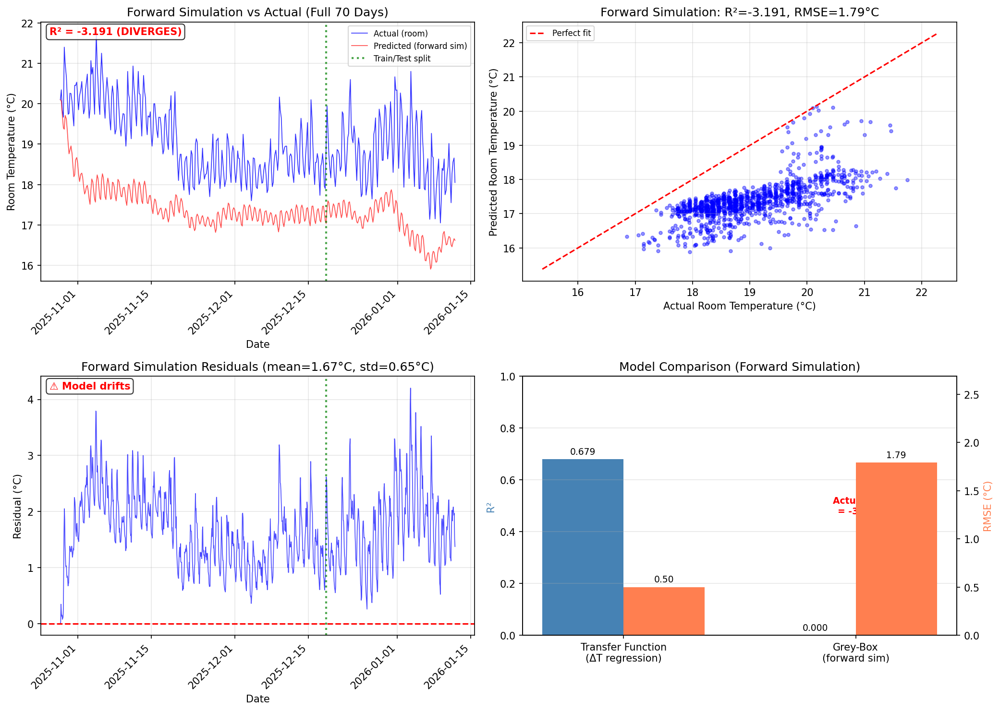

⚠️ Reference Model Only: Forward simulation diverges (R² = -3.19).
This model is kept for reference but is not used for Phase 4 optimization.
The transfer function model (Section 3.1) with R² = 0.68 is used instead.
Model Formulation
A physics-based discrete-time state-space model with two states:
$\tau_{buf} = 2.58$ h: Buffer tank time constant (~155 min)
$\tau_{room} = 72.0$ h: Building thermal mass time constant (~72 hours)
$r_{emit} = 0.10$: Heat transfer ratio (buffer→room vs HP→buffer)
$r_{heat} = 1.05$: Heat transfer ratio (buffer→room vs room→outdoor)
$k_{solar} = 0.017$ K/kWh: Solar gain coefficient
Forward Simulation Performance (Actual Model Quality)
Forward simulation runs the model recursively from initial conditions—the true test of predictive ability.
Metric
Value
Interpretation
$R^2$
-3.191
⚠️ Negative = model diverges, worse than predicting mean
RMSE
1.79°C
Model error accumulates over time
One-Step Prediction (Misleading Metric)
Note: One-step $R^2 \approx 0.99$ is artificially high because temperature is highly autocorrelated.
Predicting "$T[k+1] \approx T[k]$" trivially achieves $R^2 > 0.95$. These metrics are shown for reference only.
Decorrelation lag: 1.2 hours
(residuals become uncorrelated after this time)
Residual $\sigma$: 0.064°C
Comparison with Transfer Function Model
The grey-box model provides:
Explicit buffer tank modeling: Captures intermediate thermal storage dynamics
Physical parameters: Time constants and heat transfer ratios with clear interpretation
Constrained estimation: Parameters bounded to physically plausible ranges

Figure 18b: Grey-box thermal model: state trajectories (top-left),
actual vs predicted scatter (top-right), residual distribution (bottom-left),
model comparison (bottom-right).